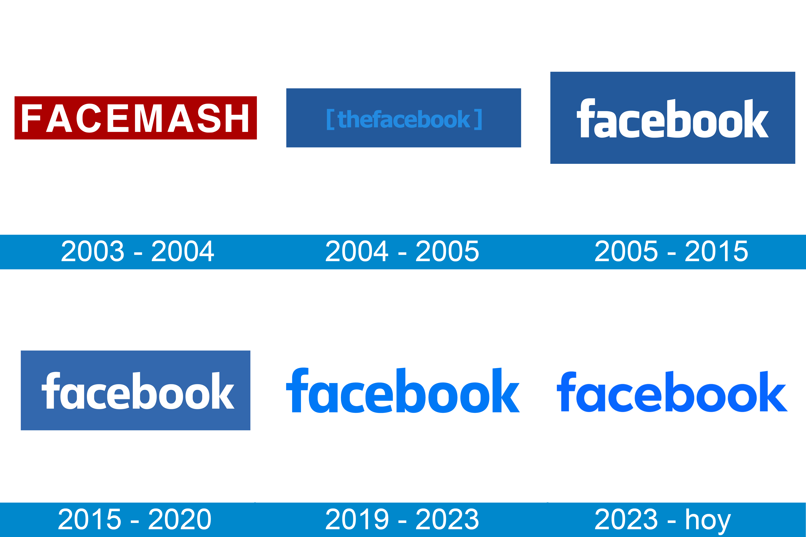

Facebook es una red social fundada por Mark Zuckerberg en 2004, que se ha
convertido en una de las plataformas de redes sociales más populares y utilizadas
en todo el mundo, ya que permite crear una comunidad para que los usuarios
interactúen y compartan contenido como publicaciones, fotos, videos y enlaces.
¿Como nació Facebook?
Allá por el 4 de Febrero de 2004, Mark Zuckerberg lanza este sitio web, junto a otros
compañeros de la Universidad de Harvard como Eduardo Saverin, Andrey McCollum, Chris Hughes y Dustin Moskovitz.
Pero no es hasta el 2008 cuando esta plataforma se encuentra disponible en español.
La idea principal de Zuckerberg era crear una nueva forma de comunicarse día a día con los estudiantes de la universidad,
aunque en muy poco tiempo se abrió para todos aquellos que tuvieran correo electrónico.
Así, se expandió a otras universidades y usuarios, hasta llegar al punto en el que nos encontramos hoy, con más de 2900
millones de usuarios al mes. Tras el éxito obtenido con la plataforma y el lanzamiento de Instagram en 2010, la empresa de Zuckerberg
adquirió los derechos de esta “App“ en 2012.

Más información sobre su origen
¿Para qué sirve Facebook?
Se comparten distintos contenidos como fotos y videos, y también contenido de
interés, como noticias, artículos, memes y videos divertidos. Te permite descubrir
contenido nuevo y relevante en función de tus intereses y conexiones.
Es una gran plataforma para la interacción social en línea, además de que
permite crear eventos y grupos temáticos, e incluso interactuar a un nivel más
profundo con el Metaverso.
En cuanto a la publicidad y marketing, Facebook ofrece opciones de publicidad dirigida
que permiten a las empresas y especialistas en marketing alcanzar a su audiencia específica
en función de datos demográficos, intereses y comportamientos. Esto les permite promocionar
productos, servicios y eventos de manera efectiva. Puedes crear una landing page para llevar
tráfico desde Facebook y generar compras o suscripciones, por ejemplo.